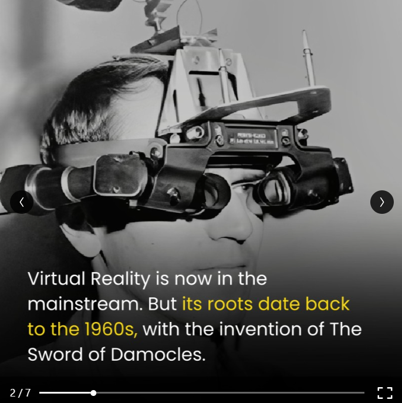
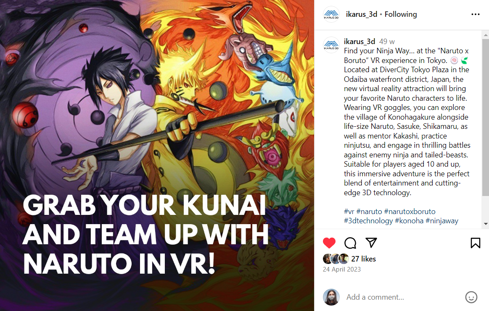

B2B sales-oriented LinkedIn post for Ikarus 3D, focusing solely on products offered and ending it with an interesting CTA
Post highlighting one of the company’s in-house activities, that creates trust on the brand with internal and external stakeholders
Informational carousel post that aims to build the company’s image as an industry expert

B2C informational post as an industry leader to create awareness and build trust with customers and prospects
Fun static post that drives engagement and is exciting to read

Post that reveals company culture, drives engagement and builds trust
Negative hook post that generates curiosity while detailing benefits